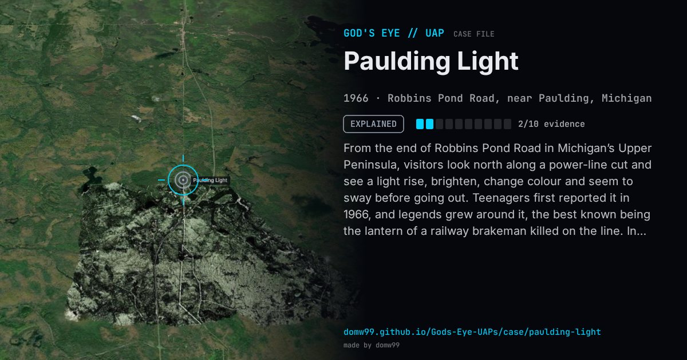

Paulding Light

From the end of Robbins Pond Road in Michigan’s Upper Peninsula, visitors look north along a power-line cut and see a light rise, brighten, change colour and seem to sway before going out. Teenagers first reported it in 1966, and legends grew around it, the best known being the lantern of a railway brakeman killed on the line. In 2010 a group of Michigan Tech students set up a telescope at the spot and could make out pairs of headlights, then recreated the light on cue with a car on U.S. 45, the highway that crosses the line of sight about 4.5 miles away.
Explanation
In May 2010 students from the optics society (SPIE) chapter at Michigan Technological University watched the light through a telescope, saw that it was a pair of car headlights, and recreated it on cue by having one of them drive U.S. 45, about 4.5 miles away, with his hazard lights on.
What was seen
Shape: A light that brightens, dims, changes colour and seems to sway
Witnesses: Visitors to the viewing spot, nightly since the 1960s
Duration: Recurring